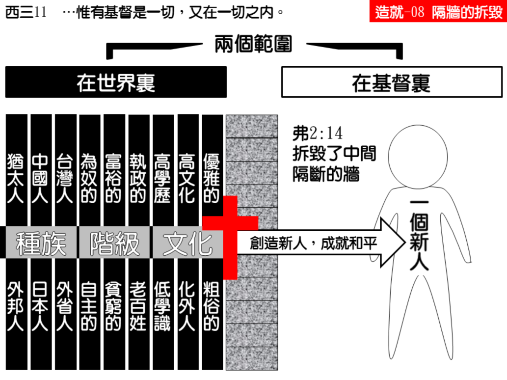

诗歌：336 首、399 首
重要经文：
哥林多前书十二章十三节：因为我们不拘是犹太人或希利尼人，是为奴的或自主的，都已经在一位灵里受浸，成了一个身体，且都得以喝一位灵。
歌罗西书三章十至十一节：穿上了新人；这新人照着创造他者的形像渐渐更新，以致有充足的知识； 在此并没有希利尼人和犹太人、受割礼的和未受割礼的、化外人、西古提人、为奴的、自主的，惟有基督是一切，又在一切之内。
加拉太书三章二十七至二十八节：你们凡浸入基督的，都已经穿上了基督。没有犹太人或希利尼人，没有为奴的或自主的，也没有男和女，因为你们众人在基督耶稣里，都是一了。
纲目要点：
壹 信徒在基督里是一，而世界最着重是个人的身分。
贰 拆毁国界的隔墙：
一 不分犹太人和希利尼人。
二 十字架拆毁了中间隔断的墙。
叁 拆毁阶级的隔墙：
一 保罗写这三封书信，那是奴隶制度最厉害的时候。
二 哥林多、加拉太、歌罗西都是说，在基督里已经除掉了。
肆 拆毁男女的隔墙。
伍 拆毁种族的隔墙：
一 犹太人所代表的，乃是满了宗教性的民族。
二 希利尼人乃是代表哲学和聪明。
三 在基督里，人的天性不能带到召会里来。
陆 拆毁文化的隔墙。
信息选读：
信徒在基督里是一
一个初信的弟兄，他已经接受了按手，已经到召会里来，已经到了元首的下面，现在他就要看见，信徒在身体里的合一，或者说区别的消灭。这意思就是说：信徒在基督里是合一的，所以彼此的区别消灭了。歌罗西三章十至十一节：“穿上了新人；这新人照着创造他者的形像渐渐更新，以致有充足的知识； 在此并没有希利尼人和犹太人、受割礼的和未受割礼的、化外人、西古提人、为奴的、自主的，惟有基督是一切，又在一切之内。”这里也是告诉我们说，信徒的区别是不存在的。
拆毁国界的隔墙
一 犹太人是国家主义最强的一个民族。他们亚伯拉罕的子孙，是神的选民，是神在地上所设立的惟一的国。所以就是要把一个外邦人摆到犹太人中间，和他们一同作基督徒，都有一点为难。犹太人相信主耶稣，作了基督徒，你请他向外邦人传福音，他不肯。在主里面，都是弟兄姊妹，不能有国界，这是自然得很的。在基督的身体里，在新人里，是完全合一的，没有国界的分别。
二 以弗所书给我们看见，犹太人是一堵墙，外邦人又是一堵墙，是两相隔开的，十字架已把这隔断的墙拆毁了，不能再有分别，不能再有分开。所以你今天碰着一个在基督里面的人，你不再说他是一个中国人，你乃是碰着一个在基督里的人；你不再说他是一个英国人，你乃是碰着一个在基督里面的人。拆毁阶级的隔墙 在人群之中，还有一个最难脱开的关系，就是阶级的关系。我们对于国界的关系碰着的不多，除非碰着外国人。但是我们每天要碰着的，是阶级的问题。使徒告诉我们说，“自主的、为奴的，”这一个阶级，在基督里也除掉了。在基督里，没有自主的和为奴的，这些关系都不存在了。我们在今天这个时代的人，听了自主的和为奴的，或者不觉得这一个区别的厉害。保罗写这三封书信，是在罗马掌权的时代，那是奴隶制度最厉害的时候。在罗马的时候，有牛的市场，有羊的市场，也有人口的市场。所以在那一个时候，一个自由的人，和为奴的人有大的区别。
拆毁男女的隔墙
姊妹的事奉，在有的地方和弟兄不一样，这是摸着权柄的安排问题。可是，今天在基督里面是没有分别的。一个弟兄，靠着得救的是基督的生命，是神儿子的生命；一个姊妹靠着得救的也是基督的生命，也是神儿子的生命。弟兄是作神的儿子，姊妹也是作神的儿子。我们要知道，圣经里面所有翻作“儿女”的地方，都应该翻作“孩子”。这个字是不分男女的，不过它的性质还是男性的。我生下来作神的孩子，将来长大是神的儿子，是男性的。弟兄是这样，姊妹也是这样。在全部新约里，只有林后六章有儿子和女儿。所以当我们来到基督面前，碰着主的时候，我们是超越过男女的关系的，我们是超越过性别的。
拆毁种族的隔墙
犹太人所代表的，乃是满了宗教性的民族；希利尼人乃是代表哲学和聪明。在历史上，你要说到宗教，你就题起犹太；你要说到哲学，你就题起希腊。今天所有基本的科学、哲学，都是从希腊出来的。一直到今天，所有科学上的名词，都是以希腊文字作根据的。所以智慧，是以希腊作代表的。要说到科学、哲学，就说希腊；要说到宗教，就说犹太。这是国民性的不同。
我们的天然性情的不能带到召会里来
你要看见，你是脾气急的也好，你是安静的也好，你是冷的也好，你是热的也好，你是讲理性的也好，你是讲感觉的也好，你一进到召会里来作弟兄，你的个性就要留在门外，这不是召会里面的东西。因为你一把这些天然的东西带到召会里来，就变作批评、分开的标准，就把弟兄们分开了。你自己就是格，凡及你的格的，就是好基督徒；凡及不到你的格的，就不是好基督徒。你把你的性情，你的性格、你的脾气，带到召会里来。你的安静不见得好，你的话多也不见得好；你的冷不见得好，你的热也不见得好；你的理性强不见得好，你的感觉厉害也不见得好。这些都是在基督之外的分别，这是希利尼人和犹太人所代表的。所以，你的天性不能带到召会里来。没有一个弟兄或姊妹，能把他天然的性格带到召会里来。你如果到召会里来，和弟兄姊妹接触，和你性格对的就对，和你性格不对的就不对；及你的格的就看为好，不及你的格的就看为不好；这样，整个召会就乱了，分开了。
拆毁文化的隔墙
从一个文化高的人来看文化低的人，的的确确是为难的。这不是阶级高低的问题，这不是智慧愚拙的问题，这也不是贫富的问题，这乃是文化的问题。从一个西古提人来看，觉得你是一个化外人，什么都不行；穿也不行，吃也不行，住也不行。从一个化外人来看，你这一个西古提人是重物质的人，又讲究吃，又讲究穿，你就是讲究这些。这两个人的观点完全不一样。如果这两个人进到召会里来，你有你的意见，他有他的意见，你觉得他不对，他觉得你不对。两个人摆在一起一定是冲突的，无论怎样都合不起来。
犹太人，相当看重割礼的事。他们认为说，受割礼的是在神的约里头的人，没有受割礼的就不是在神的约里头的人。保罗说得相当清楚，割礼不是在乎除去肉体的污秽，乃是在乎除去肉体的活体。在神面前，要紧的不是外面的事，乃是在乎里面。如果里面的看见是一样的，外表有一点不同，你不能因此而分别。他们如果看见受浸是与主同埋葬同复活，不过在外表的表示上，有一点分别，我们就不能为着这一个叫一受影响。你不能因为在肉体上的某一件事情顺服神，而觉得与别人两样。 （摘自初信造就第八篇）
课程复习：
一 请根据歌罗西三章十至十一节说明信徒的区别是不存在的。
二 为何在基督的身体里，在新人里，是完全一的，没有国界的分别?
三 为什么我们的天然的性情不能被带到召会生活里来？
四 为什么弟兄是作神的儿子，姊妹也是作神的儿子?
